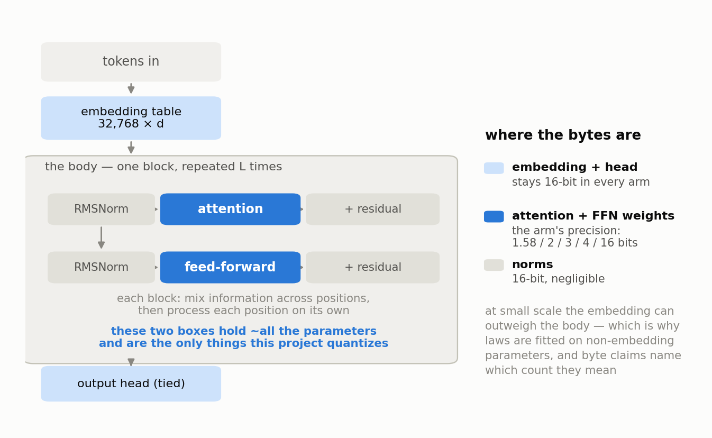

Chapter 2 — What a Language Model Is#
This chapter builds the whole object from scratch: how text becomes numbers, what the model is actually asked to do, what its adjustable parts are, how those parts are arranged into a transformer, and how training changes them. By the end you will be able to read a sentence like "3M non-embedding parameters at 320 tokens per parameter" and know exactly what every word in it means, including why this project counts parameters the unusual way it does.
From text to numbers: tokens#
A neural network cannot read letters. It manipulates numbers, so the first job is converting text into numbers, and the conversion has to be reversible so the model's output can be turned back into text.
The scheme every modern language model uses is tokenization: splitting text into a fixed inventory of chunks called tokens, each of which has an integer ID. The inventory is the vocabulary. Chunks are not words and not letters; they are frequent pieces of text, so common words get a token to themselves while rarer words get built out of parts. Here is a real example from the exact tokenizer this project uses, where _ marks a leading space:
| Text | The mitochondria is the powerhouse of the cell. |
|---|---|
| Tokens | _The _mit och ond ria _is _the _power house _of _the _cell . |
| IDs | 450, 1380, 2878, 898, 2849, 338, 278, 3081, 8697, 310, 278, 3038, 29889 |
Forty-seven bytes of English became thirteen integers. Notice the pattern: _The, _is, _the, _of are single tokens because they are everywhere in English, while "mitochondria" costs four because it is not. Notice also that _the appears twice with the identical ID 278. Tokens are a lookup table, not a computation.
LOGOS uses TinyLlama's tokenizer, which has 32,000 entries, and pads the model's table to 32,768 because powers of two are efficient on GPUs (the top 768 rows are simply never used). This choice is frozen for the entire project. Training a custom tokenizer would be a second variable moving alongside precision, and the whole method depends on moving one variable at a time.
The whole task: predict the next token#
Here is the part that surprises people: predicting the next token is not one of the things a language model does. It is the only thing it does.
Given a sequence of tokens so far, the model outputs a probability distribution over the vocabulary: 32,768 numbers, all non-negative, summing to 1, one per possible next token. Feed it _The _mit och ond and a well-trained model might put substantial probability on ria and very little on . or _banana. That is the entire output. Everything else, from chat to summarization to code, is this one operation applied repeatedly, each predicted token appended to the sequence and fed back in.
The reason this narrow task produces broad ability is that predicting text well requires modeling whatever the text is about. To finish "the capital of France is" you need the fact. To finish a line of code you need the syntax and the variable names in scope. The training signal is cheap and unlimited because every piece of text in the world is already labeled: the label for each position is the token that actually came next.
Parameters: the numbers that get adjusted#
A model is defined by two things: a fixed structure (what operations happen in what order) and a large collection of adjustable numbers threaded through that structure. Those numbers are the parameters, also called weights. They start random and are gradually adjusted so the model's predictions match real text. When people say a model "has 7 billion parameters," they are counting these numbers.
Nearly all of them live in linear layers, also called matrix multiplications. A linear layer takes a list of numbers in and produces a different list out, where each output is a weighted sum of all the inputs. If the input is 256 numbers and the output is 256 numbers, the layer needs 256 × 256 = 65,536 weights, one for every input-output pair, describing how much each input contributes to each output. That is all a matrix is here: a table of "how much does this feed into that." Stack many such layers with simple nonlinear functions between them and you can represent very complicated relationships.
The architecture: a transformer decoder#
The arrangement LOGOS uses is the transformer decoder, the same family as GPT and Llama. It has three parts: an entry point that turns token IDs into vectors, a stack of identical processing blocks, and an exit point that turns the final vector back into probabilities.

The entry: the embedding table#
The embedding table is a lookup table with one row per vocabulary entry. Each row is a list of numbers, and the length of that list is the model's width, written d_model. Token ID 278 fetches row 278. That row is the model's learned representation of _the, and its values are parameters like any others: they get adjusted during training.
The table's size is vocabulary × width. For a model with d_model = 256, that is 32,768 × 256 = 8,388,608 parameters, sitting in the model before a single block has run. Hold onto that number; it becomes important shortly.
The body: attention#
Each block has two halves. The first is attention, and the concept is simpler than its reputation. At every position in the sequence, the model asks: which earlier positions are relevant to me right now? It computes a relevance score against each previous position, converts those scores into weights that sum to 1, and takes a weighted average of what those positions hold. The result is mixed back into the current position.
That is the whole idea. If the current position is finishing a pronoun, attention lets it pull in the noun from twelve tokens back. If it is closing a bracket, it can pull in the bracket that opened. Positions can only look backwards, never forwards, which is what makes this a decoder: predicting the next token would be trivial if you could peek at it. Attention is also the only place where information moves between positions; every other operation treats each position independently.
The body: feed-forward#
The second half of each block is the feed-forward network, and its job is per-position processing. It takes the vector at each position, expands it into a wider intermediate representation, applies a nonlinear function, and projects it back down. No information crosses between positions here. If attention is "gather what is relevant from the past," feed-forward is "now think about what you gathered." It typically holds more parameters than attention does.
The plumbing and the exit#
Each half is preceded by a normalization step that rescales the vector to a consistent size, which keeps the numbers flowing through a deep stack from exploding or vanishing. LOGOS uses RMSNorm, a lightweight variant. Position information enters through RoPE (rotary position embeddings), which encodes where a token sits by rotating its representation. Attention uses grouped-query attention at a 4:1 ratio, meaning four attention heads share one set of keys and values, which shrinks the KV cache from Chapter 1 by a factor of four. The feed-forward uses SwiGLU, a gated nonlinearity.
At the exit, an output head maps the final vector back to 32,768 numbers, one per vocabulary entry, which are converted into probabilities. In LOGOS the output head does not have its own parameters: it reuses the embedding table, a standard trick called tied embeddings. The same table that turns IDs into vectors turns vectors back into scores.
Training: forward, loss, backward, step#
Training is a loop with four stages, repeated hundreds of thousands of times.
The forward pass runs a chunk of text through the network and produces predicted distributions at every position. The loss compares those predictions to what actually came next and produces a single number measuring how wrong the model was; Chapter 3 is devoted entirely to this. Backpropagation then computes, for every parameter, how the loss would change if that parameter were nudged up or down. Finally the optimizer step nudges every parameter a little in the direction that reduces loss. The size of the nudge is set by the learning rate.
One pass through this loop is a step. The chunk of text used in one step is a batch. LOGOS fixes the batch at 2^18 = 262,144 tokens, arranged as sequences of 1,024 tokens each, on every run in the project including the cloud validation runs, so no comparison is ever contaminated by a difference in batch size.
Training therefore consumes a stream of tokens, and the total consumed is the second number that defines a run. A model trained on 2 billion tokens with a batch of 262,144 takes roughly 7,600 steps. The data order is frozen project-wide by a fixed seed, so two runs differing only in precision see literally the same text in the same order.
N and D: the two numbers that define scale#
Almost everything in scaling-law research reduces to two quantities. N is the parameter count. D is the number of training tokens consumed. Quality is largely a function of these two, which is why a law of the form L = E + A/N^α + B/D^β can be fitted at all: loss falls as a power of N and as a power of D, toward an irreducible floor E.
Why LOGOS counts non-embedding parameters#
Here is where this project makes a choice you need to understand to read any of its results.
The embedding table's size depends on the vocabulary, fixed at 32,768, and not on how deep or capable the model is. At the scale of a 7-billion-parameter model, an embedding table is a rounding error. At the scale LOGOS works, it dominates. Compare the ladder's smallest sizes:
| Size | Width | Layers | Non-embedding N | Embedding params | Total | Embedding share |
|---|---|---|---|---|---|---|
| 3m | 256 | 4 | 3,211,264 | 8,388,608 | 11,599,872 | 72% |
| 6m | 256 | 8 | 6,422,528 | 8,388,608 | 14,811,136 | 57% |
| 12m | 384 | 7 | 12,386,304 | 12,582,912 | 24,969,216 | 50% |
| 25m | 512 | 8 | 24,903,680 | 16,777,216 | 41,680,896 | 40% |
| 60m | 640 | 12 | 59,473,920 | 20,971,520 | 80,445,440 | 26% |
The "6m" model has 6,422,528 parameters in its body and 8,388,608 in its embedding table. The lookup table is larger than the model. If you fitted a scaling law on total parameters, you would mostly be fitting a law about a lookup table whose size never changes with capability, and the fit would be garbage.
So LOGOS fits its laws on non-embedding N: the parameters in the blocks, the ones that actually do the computing. Both counts are reported everywhere, because the byte story cuts the other way. A packed ternary 25m artifact is 6.2 MB of body and 33.6 MB of embeddings, so 84% of its bytes are embedding. When the project talks about memory budgets it talks about body-byte budgets, and says so every time. This is the honest cost of working at small scale, and it is stated as a standing limitation rather than buried.
Tokens per parameter: the "how much training" axis#
The single most useful derived quantity in this project is D/N, tokens per parameter: how many training tokens each parameter got to learn from.
Chinchilla's 2022 finding was that, for a fixed compute budget, the best split puts roughly 20 tokens per parameter. That is the compute-optimal point, and it is the wrong target for anything you intend to deploy. You train a model once and serve it to millions of users forever, so the training cost amortizes to nothing per user while the serving cost, which depends on model size, is paid every single time. Given that asymmetry, the rational move is to train a smaller model for much longer than Chinchilla-optimal: spend more up front to get a permanently cheaper artifact. Every deployed model in the industry therefore sits far to the right of optimal.
LOGOS spans that axis deliberately, at 20×, 80×, and 320× tokens per parameter. At 3M non-embedding parameters, 20× is about 64 million training tokens and 320× is about 1.03 billion. The axis matters because the literature suggests low-bit models look best when undertrained and worst when heavily overtrained, and the project's L0 results confirm exactly that. This is where the low-bit trade-off flips, so any law that ignores it is answering the wrong question.
The ladder LOGOS actually trains#
The models in the table above are the whole local program: 3M, 6M, 12M, 25M, and 60M non-embedding parameters, all trained on a single desktop GPU. A 125M model (127,401,984 non-embedding parameters) serves as the cloud validation anchor, and it had not been trained at the time of writing. Every rung is architecturally identical apart from width and depth: Llama-style decoder, RMSNorm, RoPE, grouped-query attention at 4:1, SwiGLU feed-forward, tied 32,768-entry embeddings. Sameness is the point. When only precision differs between two runs, any difference in the result has only one place to come from.
What to remember#
A language model converts text into integer tokens from a fixed 32,768-entry vocabulary, and its entire job is to output a probability distribution over which token comes next. That job is performed by an embedding table, a stack of identical blocks each containing attention (which mixes information across positions by weighted averaging) and a feed-forward network (which processes each position on its own), and a tied output head; training adjusts every number in that structure through a repeated cycle of forward pass, loss, backpropagation, and optimizer step. Scale is described by two numbers, parameter count N and training tokens D, and LOGOS counts N as non-embedding parameters because at 3M to 60M the fixed 32k embedding table rivals or exceeds the entire model body, while simultaneously reporting total counts because the embedding is where most of the bytes live. The ratio D/N is the axis along which the low-bit trade-off flips, with 20× being roughly compute-optimal and 320× being the heavily overtrained regime where real deployed models live.